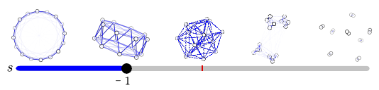
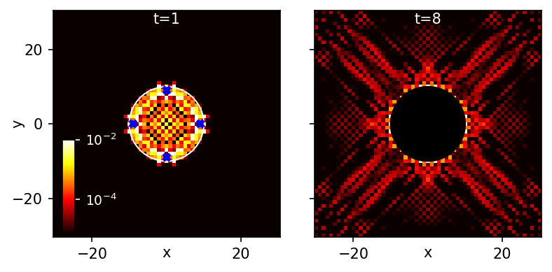
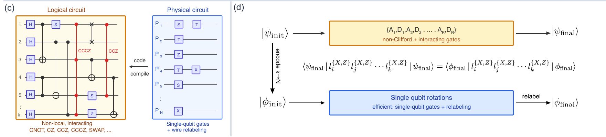
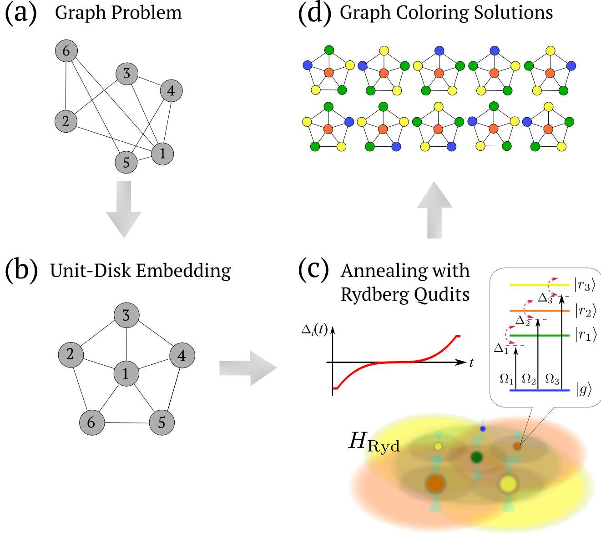

Aydin Deger
・Research Associate,
Theory of Quantum Systems, University of Oxford
・Research Fellow, Wolfson College, Oxford
I am a theoretical physicist working in quantum many-body physics, statistical mechanics and quantum computation. I study how interactions produce collective phenomena — phase transitions, rare fluctuations, constrained dynamics and information scrambling — and how to realise and diagnose them on quantum computers. In parallel, I explore the origins of quantum computational complexity: which resources obstruct classical simulation, and how algorithms and fault-tolerant protocols can exploit the native capabilities of quantum processors.
Research
1. Criticality and Fluctuations
Selected contributions
- Lee–Yang theory from fluctuations — I developed what is now known as the cumulant method, which extracts Lee–Yang zeros and critical behaviour from the high-order fluctuations of measurable observables. I established the method in Phys. Rev. E 97, 012115 (2018) (Editor's Suggestion) and extended it to determine universal critical exponents [Phys. Rev. Research 1, 023004 (2019)], rare fluctuations [Phys. Rev. Research 2, 033009 (2020)] and large-deviation statistics of the Ising model [Phys. Rev. B 102, 174418 (2020), Editor's Suggestion].
- Criticality in dynamics and open systems — I extended the cumulant framework to real-time dynamics, determining dynamical quantum phase transitions in strongly correlated systems [Phys. Rev. X 11, 041018 (2021)], and to driven open systems, locating a nonequilibrium phase transition in a single-electron micromaser [Phys. Rev. B 105, 155421 (2022)].
- Geometric entanglement — with Tzu-Chieh Wei, I established geometric entanglement as a probe of quantum phase transitions in generalized cluster-XY models [Quantum Inf. Process. 18, 326 (2019)].
- Emergent interaction geometry — with the Daley group at Oxford, I showed that the geometry of sparse long-range interactions drives phase transitions in cold-atom spin models [arXiv:2512.08709] and governs their low-energy phase structure through a unified effective-geometry principle [arXiv:2606.20387].

2. Non-Equilibrium Dynamics, Scrambling and Black Holes
Selected contributions
- Constrained dynamics and ergodicity breaking — in two companion PRLs I showed that kinetic constraints can arrest many-body chaos [Phys. Rev. Lett. 129, 160601 (2022)] and that deterministic constrained dynamics falls into directed percolation universality [Phys. Rev. Lett. 129, 190601 (2022), Editor's Suggestion].
- Weak ergodicity breaking and localisation — I identified a weak ergodicity breaking transition in randomly constrained models [Phys. Rev. B 109, L220301 (2024)] and established Stark many-body localisation under periodic driving [Phys. Rev. B 110, 134205 (2024)].
- Black-hole lattice simulation — I developed a many-body simulator for a three-dimensional black hole built from Dirac fermions, and used it to probe key features of the AdS/CFT correspondence in a lattice model where observables can be defined and measured [Phys. Rev. B 108, 155124 (2023)].
- Measuring Hawking temperature — with the Schneider group (Cambridge), I designed a Floquet-driven optical-lattice experiment to measure Hawking temperature, turning black-hole physics into a protocol realistic for current cold-atom platforms [arXiv:2312.14058].

3. Quantum Resources and Classical Simulability
Selected contributions
- Persistent non-Gaussian correlations — I uncovered a mechanism by which strong interactions and kinetic constraints generate and protect non-Gaussian correlations in out-of-equilibrium Rydberg atom arrays, and introduced Wick-factorisation diagnostics that quantify this resource directly from experimental data [PRX Quantum 4, 040339 (2023)].
- Emergent Gaussianity — with collaborators, I showed how Gaussianity emerges in the thermodynamic limit of interacting fermions, clarifying when an interacting system admits an effective free description [Phys. Rev. B 104, L180408 (2021)].
- Code-compiled tensor networks — I led the development of a simulation method that uses symmetries of quantum error-correcting codes to map circuits with high entanglement, magic and non-Gaussianity into classically tractable tensor networks. This shows that magic alone is no guarantee of quantum advantage. The method also provides a practical benchmark for quantum hardware: a device executes a deep, nontrivial logical circuit while the efficiently simulated MPS supplies the classical reference needed to verify its output. These circuits can therefore test how faithfully NISQ and early fault-tolerant processors perform complex logical operations [arXiv:2607.08396].

4. Quantum Computers: Algorithms, Optimisation and Fault Tolerance

Selected contributions
- Rydberg-qudit optimisation — with collaborators at Durham and Strathclyde, I showed how Rydberg qudits solve graph-colouring problems through quantum optimisation [Quantum Sci. Technol. 11, 025012 (2026)].
- Discovery mode on quantum processors (in preparation) — We developed an autonomous discovery framework that couples a superconducting quantum processor to a classical learning agent. Guided by quantum processor data, the agent explores circuit space and identifies structured many-body dynamics, including discrete time crystals and dual-unitary circuits (arXiv:2507.01013).
- Partially fault-tolerant logical computation (in preparation) — We are developing a framework for neutral atoms that replaces costly T-gate decompositions with direct analogue logical rotations on small-distance surface-code resource states and integrates pulse-level optimisation of the Rydberg gate to suppress the dominant undetectable logical error.
- Long-range connectivity for variational algorithms — with Helene Lösl and Andrew Daley, I identified when structured long-range connectivity is a genuine resource for variational quantum algorithms on reconfigurable neutral-atom and trapped-ion platforms [arXiv:2607.07547].
Publications
20 publications | 11 lead-author
- 2026 | A. Deger, S. Koutsioumpas, M. Webster, H. Sayginel, J. Roffe and D. E. Browne, "Efficiently simulable quantum circuits with large entanglement, magic, and non-Gaussianity via code-compiled tensor networks", arXiv:2607.08396
- 2026 | H. M. Lösl, A. Deger and A. J. Daley, "Variational Learning with Sparse Long-range Entangling Gates", arXiv:2607.07547
- 2026 | A. Gunning, S. Schmid, Z. Liu, S. Kuriyattil, A. Deger and A. J. Daley, "Interaction geometry and ground-state properties of sparse quantum lattice models", arXiv:2606.20387
- 2026 | T. Angkhanawin, A. Deger, J. D. Pritchard and C. S. Adams, "Graph coloring via quantum optimization on a Rydberg-qudit atom array", Quantum Sci. Technol. 11, 025012
- 2025 | A. Gunning, A. Deger, S. Kuriyattil and A. J. Daley, "Geometry-driven transitions in sparse long-range spin models with cold atoms", arXiv:2512.08709 (Under review in PRL)
- 2024 | C. Duffin, A. Deger, A. Lazarides, "Stark Many-Body Localisation Under Periodic Driving", Phys. Rev. B 110, 134205
- 2024 | A. Deger, A. Lazarides, "Weak ergodicity breaking transition in randomly constrained model", Phys. Rev. B 109, L220301 (Letter)
- 2023 | A. Benhemou, G. Nixon, A. Deger, U. Schneider, and J. Pachos, "Measuring Hawking temperature in an optical lattice simulator", arXiv:2312.14058 (Under review in PRA)
- 2023 | A. Deger, A. Daniel, Z. Papic, J. Pachos "Persistent non-Gaussian correlations in out-of-equilibrium Rydberg atom arrays", PRX Quantum 4, 040339
- 2023 | A. Deger, M. Horner, J. Pachos "AdS/CFT Correspondence with a 3D Black Hole Simulator", Phys. Rev. B 108, 155124
- 2022 | A. Deger, A. Lazarides, S. Roy, "Constrained Dynamics and Directed Percolation", Phys. Rev. Lett. 129, 190601 – (Editor’s Suggestion)
- 2022 | A. Deger, S. Roy, A. Lazarides, "Arresting classical many-body chaos by kinetic constraints", Phys. Rev. Lett. 129, 160601
- 2022 | F. Brange, A. Deger and C. Flindt, "Nonequilibrium phase transition in a single-electron micromaser", Phys. Rev. B 105, 155421
- 2021 | G. Matos, A. Hallam, A. Deger, Z. Papic, J. K. Pachos, "Emergence of gaussianity in the thermodynamic limit of interacting fermions", Phys. Rev. B 104, L180408
- 2021 | S. Peotta, F. Brange, A. Deger, T. Ojanen, C. Flindt., "Determination of dynamical quantum phase transitions in strongly correlated many-body systems using Loschmidt cumulants", Phys. Rev. X 11, 041018
- 2020 | A. Deger, F. Brange and C. Flindt, "Lee-Yang zeros, high cumulants, and large-deviation statistics of the Ising model", Phys. Rev. B 102, 174418 – (Editor’s Suggestion)
- 2020 | A. Deger and C. Flindt, "Lee-Yang theory of the Curie-Weiss model and its rare fluctuations", Phys. Rev. Research 2, 033009
- 2019 | A. Deger and C. Flindt, "Determination of Universal Critical Exponents Using Lee-Yang Theory", Phys. Rev. Research 1, 023004
- 2019 | A. Deger and T-C. Wei, "Geometric entanglement and quantum phase transition in generalized cluster-XY models", Quantum Inf. Process. 18, 326
- 2018 | A. Deger, K. Brandner and C. Flindt, "Lee-Yang Zeros and large-deviation statistics of a molecular zipper", Phys. Rev. E 97, 012115 – (Editor’s Suggestion)
Software
BlueTangle.jl
A noisy, dynamic quantum-circuit simulator in Julia for NISQ-era research. Highlights include:
- Mid-circuit measurements for measurement-induced phenomena (e.g. entanglement phase transitions, quantum error correction).
- Configurable noise channels via Kraus operators.
- Error mitigation utilities: Pauli twirling, zero-noise extrapolation, and measurement-error mitigation.
- Multiple state representations: state vector, density matrix, and MPS (via ITensor) under the same high-level API.
- Trotterized Hamiltonians built from concise operator-string inputs.
- Variational Quantum Eigensolver (VQE) with easy setup.
- Stabilizer codes support for quantum error correction.
- Quantum-information toolkit (entanglement, partial traces, gaussianity, phase estimation, classical shadows, high-order moments).
PhasePoly.jl
A fast, exact simulator for monomial quantum circuits, based on the phase-polynomial / Gauss-sum method. Highlights include:
- Efficient Pauli expectation values: for circuits with diagonal phase gates up to level 3 (Z, S, T, CZ, CS, CCZ), Pauli expectations reduce to quadratic Gauss sums evaluated in O(n³) time, without explicit statevector evolution.
- Level-4 gates (√T, CT, CCS, CCCZ) handled exactly by branching only over surviving √T terms.
- Flexible inputs: essentially any stabilizer/phase input — computational and Pauli basis states, magic states, and entangled inputs such as graph states.
- Exact, compact representation of the unitary as an affine map over GF(2) plus a phase polynomial; matches dense statevector simulation to machine precision.